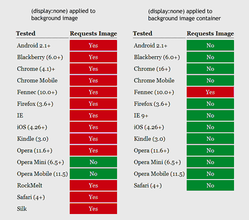

Explain How!
The Fundamentals
Strive to keep your design flexible. Flexible width, flexible images, flexible content. Give your user the choice to view your site in the desktop version or the mobile version no matter where they are or what device they use.
Make navigation and input easy and clear. To respect the restrictions of mobile input options, you should make your clickable areas large and spaced out. Reduce the amount of text a user needs to fill out, and allow the page to "remember" what they input for next time. You should also provide an option to show password characters, because errors are so much more common on mobile devices. Make sure phone numbers are setup for instant dialing, using the <tel> tag.
Mobile users want different content -- more streamlined, more quickly accessible, and with fewer pictures. Many mobile users are concerned about data usage -- and cell phones have significantly less processing power, storage capacity, and often slower connection speeds than desktop computers.
Some Rules of Thumb
- Users tend to expect one vertical-scrolling column. If you ask them to scroll horizontally, or to constantly zoom in and out, you may confuse them (and lose them).
- Make info easy to find and consume, and make searching VERY easy.
- Use a subtle, readable color scheme (that would be readable in various forms of lighting).
- Keep your font usage to just a few fonts, and just a few sizes.
- Don't use framesets or plug-ins like Flash
- Keep scripting like Java to a minimum, or at least ensure graceful degradation, as many phones still do not support script
- Don't use pop-ups or new windows
- Fingertips are 40-80 pixels diameter, so keep this in mind when styling clickable areas
- Remember, there is no "hover."
- Forms should use native web form controls (not custom forms), use HTML5 form input types, and use top-aligned labels.
- And don't forget to use whitespace! Good design is still important for mobile. Perhaps even moreso.
Dealing With Images
First and foremost - avoid complex background images. Just don't do it. And actually, keep foreground graphics to a minimum too -- and a minimum file size!
Option #1. Do Nothing
BAD IDEA.
Option #2. Multi-Serve
Upload multiple versions of the same graphic, one optimized for desktop and one optimized for the smaller resolution of a mobile device. This will help you maintain fast loading times and not put too much stress on the processor. Call them separately through CSS Media Queries.
DO NOT rely on the width and height attributes to do your scaling for you!
Option #3. Cropping
Use the CSS overflow property (overflow: hidden) to crop your images dynamically. Make the div container larger when viewed on desktop, and smaller (than the image) when viewed on a mobile device.(This doesn't solve the resolution problem, however.)
Option #4. A Collage.
A cool trick I learned from Joe Marini at Lynda.com is this: if you have numerous small images, like navigation icons, combine them into one gif and display each one inside a div (kind of like sprites). That way there's only one HTTP request and only one (albiet larger) image downloaded. However, don't try to depend on imagemaps, because there is no functional 'hover' ability to show people what is clickable.
Option #5. A Puzzle.
I learned from the W3C Mobile Web Best Practices 1.0 Basic Guidelines that you can break large images up into smaller sections, and deal with them separately. Hide several chunks of the picture when viewed on mobile using (display:none). But, read ahead...
Option #6. Display:none
Just hide all your images. Maybe a lazy approach, but it can work. Be sure, however, that you apply (display:none) to a div or other container that holds the image -- not just to the image itself! As you can see below, Tim Kadlec's testing shows that nearly all mobile browsers still send an HTTP request for the hidden image -- unless their container is hidden as well! (Unfortunately hiding the container only works for background images. Read on...) 
Tim's Recommendations
“If you’re going to hide a content image, you’re not going to be able to do it by setting display:none. I recommend using a Javascript or server-side based approach instead.
If you want to hide a background image, your best bet is to hide the parent element. If you can’t do that, then use a cascade override... and set the background-image to none when you want it hidden.
For swapping background images, define them both inside of media queries.”
StyleCampaign.com also offers commentary on the problem of pictures. There is not one perfect answer, as far as I could find. In my demo, I used background images inside divs that I could then hide for mobile. But for this tutorial, nearly all the images are foreground/content images, so it is not easy to know how to optimize them for mobile.
You're killin' me, Smalls!
There are quite a few browsing engines out there, and you can't very easily design for all of them! It is good to design for a few of them so you need to pick out who you're really aiming for.
If your users are primarily younger, technogeek types, make sure you're designing for the Android and iOS platforms. If your users will be primarily older, more business-minded folks, be sure to design for Windows phones and Blackberries.
Marini, from Lynda.com recommends keeping to the concept of graceful degradation -- some older phones may only be able to view plain text! Quirksmode.org has a lot of information about which mobile browsing engines support which tags/functions.
ACTUAL CODE. Finally, right?
Okay, first off, the current suggested mobile markup language is XHTML-MP, but moving forward it will be all HTML5. According to Lynda.com, you should start by putting the following meta information in your HEAD section, to help the mobile browser determine how to best lay out the page:
<meta name="HandheldFriendly" content="true" /> (failsafe for older browsers)
<meta name="MobileOptimized" content="320" />(or the screen width the page was designed for)
<meta name="Viewport" content="width=device-width" />(The most recent tag and current standard. It sets the page width to the device width, and turns off the browser's mobile optimizations.)
The next step then, if you're going with Option #2 - designing one site that's flexible (or "Responsive") -- is to add a little something called "CSS Media Queries." You can define them in one of two different ways. The first one: define them within a <link> tag in the HEAD section of your HTML, like this:
<link rel=stylesheet media=screen and (max-width:800px)href="example.css"/>
You would then link to separate stylesheets for the different scenarios. However, this means that your users' devices will download 2-3 stylesheets instead of just 1...which costs more data. The other option is to define the media queries inside a single CSS style sheet that has multiple sections.
Here is an example from CSS-Tricks.com:
/* Smartphones (portrait and landscape) ----------- */
@media only screen
and (min-device-width : 320px)
and (max-device-width : 480px) {
/* Styles */
}
/* iPads (portrait and landscape) ----------- */
@media only screen
and (min-device-width : 768px)
and (max-device-width : 1024px) {
/* Styles */
}
/* Desktops and laptops ----------- */
@media only screen
and (min-width : 1224px) {
/* Styles */
}
CSS-Tricks.com provides pre-configured media queries for many well-known devices here. And you can test your site on different widths at Matt Kersley's site, here.
Continue Your Journey
There is much more to learn, such as server-side detection to enable/disable features the mobile device can support, HTML 5 local storage, and new styles that can support the different types of "touch events" (tap, hold, pinch, etc.).
- WebDesignShock.com's Responsive Design Problems
- Smashing Magazine's Responsive Web Design Techniques
- Smashing Magazine's Techniques for Gracefully Degrading Media Queries
- WebDesignerWall.com's Responsive Design in 3 Steps
- Mr.Dev.Mobi
- Mobiforge.com - A Beginner's Guide
- W3.org
- Passani's alternative Best Practices